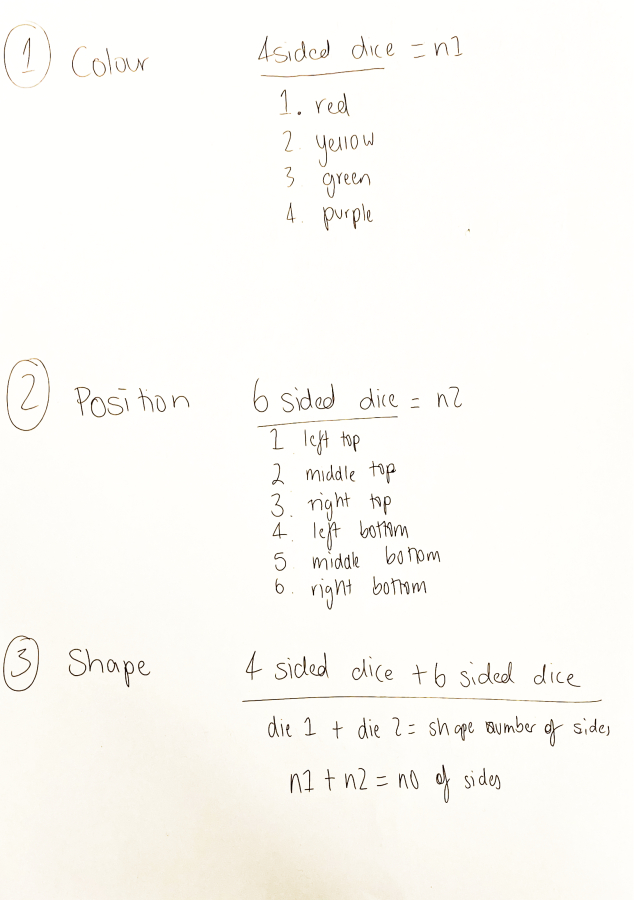

To practice offline algorithmic thinking, I designed a game that would generate shapes on a piece of paper according to the results of dice rolls. Some aspects I thought could be determined by dice rolls were the shape's location, its colour and the number of sides it has. As I had a d6 (six-sided die) and d4 (four-sided die) at my disposal, I decided to divide the paper into equal sections that would help determine the location of the shape. To diversify the shapes, the number of sides was decided by a d4 + d6, with an exception where a result of (1, 1) would result in the shape being a triangle.

The playtest generated a variety of unique shapes, but their locations were rather uninteresting. If I refined this game, I would leave more things up to chance, as other aspects such as the specific shape and location were still left up to the player.
I translated my game into a p5.js sketch using the knowledge from this week's workshop. Generating polygons proved to be the most difficult part of the code due to it requiring geometry knowledge (to place vertex points on a circle around the original starting point), and I used an AI program to generate the code for that specific functionality.
A link to the sketch.I'm happy with the Javascript implementation, as the rules for the dice game were successfully followed.
BACK